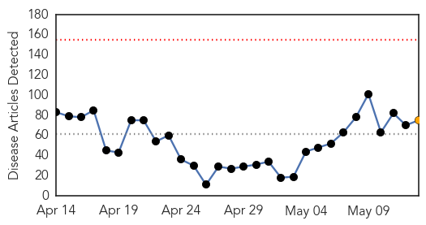
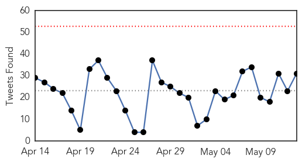
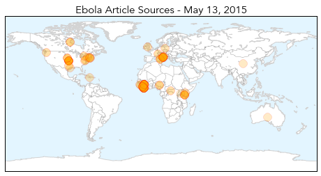
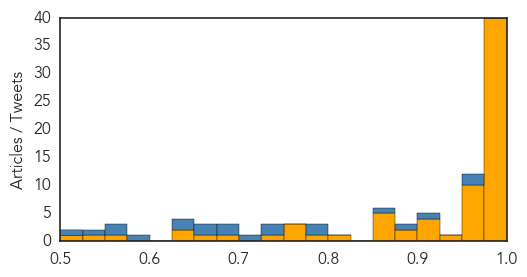

Ebola
30-Day Web Trend
0 alerts, 1 warnings

30-Day Twitter Trend
0 alerts, 0 warnings

Article Locations
Article Confidences
Top Articles:
- 1.000
- Liberia's Ebola Nightmare Is Over
- 1.000
- Nurse in Italy infected with Ebola, returned from Sierra Leone
- 1.000
- Patient at UConn Health Center tests negative for Ebola
- 1.000
- A public health victory in Liberia
- 1.000
- Ebola sickens Italian nurse; cases decline in outbreak region
- 1.000
- Nurse in Italy infected with Ebola, returned from Sierra Leone
- 1.000
- Nurse becomes Italy's second Ebola case
- 1.000
- Ebola Not Mutating Beyond 'Normal' Rate, Scientists Say
- 0.999
- Patient with Ebola-like symptoms tests positive for malaria
- 0.999
- The Ebola buffoons get humiliated: The politicians and pundits who were the wrongest about Ebola
- 0.999
- Liberia Given The All Clear From Ebola
- 0.999
- UConn Patient Monitored for Ebola Tests Positive for Malaria
- 0.999
- Italian nurse tests positive for Ebola, 2nd case in country
- 0.999
- Italian nurse positive for Ebola not in critical conditions - Xinhua
- 0.999
- Ebola, health systems and justice in West Africa Vatican Radio
- 0.998
- THINK AGAIN: Why did Liberia beat Ebola before Guinea or Sierra Leone?
- 0.998
- Kenya lifts travel suspension of Ebola-free Liberia
- 0.998
- Kenya lifts travel suspension on Ebola-free Liberia - Xinhua
- 0.997
- Experts weigh challenges, options for Ebola vaccine clearance
- 0.997
- Ebola: Italian nurse tests positive for disease
- 0.996
- Latest Ebola data rule out rapid mutation
- 0.996
- Ebola failures prompt WHO rethink
- 0.995
- Ebola virus disease – Italy
- 0.995
- Liberia holds ‘Goodbye Ebola’ celebrations
- 0.995
- Observer
- 0.995
- Italian Nurse Who Worked in Sierra Leone Tests Positive for Ebola
- 0.995
- Is It Ethical To Keep Trying To Develop An Ebola Vaccine?
- 0.994
- Gbowee Peace Foundation Hails WHO
- 0.992
- As Ebola disappears, no useful data seen from vaccine trials
- 0.991
- US Congratulates Liberia Gov’t
- 0.991
- Patient admitted to Connecticut hospital with possible Ebola infection
- 0.989
- Italy Records Ebola Case
- 0.987
- Learning from Ebola crisis
- 0.987
- pandemics are strongly driven by inequality
- 0.986
- Disputes emerge over African Ebola drug trials
- 0.984
- Mahama congratulates Liberia over end to Ebola
- 0.982
- The Liberian Observer
- 0.982
- AfDB Rep. Calls for Resilient Healthcare System
- 0.981
- Nurse hospitalised in Rome after testing positive for Ebola
- 0.979
- Fighting Ebola: One Man’s Story of Life and Death in Sierra Leone
- 0.974
- How Nigeria beat the ebola virus in three months
- 0.974
- Ebola Testing Being Done On Connecticut Man Who Returned From Liberia « CBS New York
- 0.970
- Reuters Health News Summary
- 0.969
- WHO works on plan to tackle disease outbreaks after Ebola fiasco
- 0.969
- Italian Nurse Hospitalised In Rome After Testing Positive For Ebola
- 0.968
- 42 days later: Liberia declared Ebola-free
- 0.961
- Ebola vaccine trial in west Africa faces criticism
- 0.961
- The pain of the new normal: Guinea after Ebola
- 0.954
- Kenya Airways : Relief for Kenya Airways as Liberia Ebola ban lifted
- 0.952
- A nightmare comes to close in Liberia as MDs declared ‘Ebola-free’ : Frost Illustrated
Showing top 50 articles...
Top Tweets:
- 0.995
- Patient Admitted to UConn Health Center With Possible Ebola Virus - NBC Connecticut http://t.co/wXLdDVWszQ ebola EVD
- 0.995
- Patient Admitted to UConn Health Center With Possible Ebola Virus - NBC Connecticut http://t.co/bTAUcqZ4na ebola EVD
- 0.982
- Experts Criticize World Health Organization's 'Slow' Ebola Outbreak Response - Wall Street Journal http://t.co/t3QG44aIiu ebola EVD
- 0.979
- Liberia Ebola Orphans: Over 4500 Children Lost Parents Due To Deadly Virus - International Business Times http://t.co/OwKeDaTCJ3 ebola EVD
- 0.977
- Patient At John Dempsey Hospital Undergoing Ebola Testing - Hartford Courant http://t.co/xwwRZ3q6bt ebola EVD
- 0.961
- How Nigeria beat the ebola virus in three months - The Conversation AU http://t.co/JnuSzbMNXY ebola EVD
- 0.953
- Patient Admitted to UConn Health Center With Possible Ebola Virus - NBC Connecticut http://t.co/nNprPimhDS
- 0.876
- Africa must do more to fight Ebola - ethics & medical lawvprofessor - News24 http://t.co/5IBl8uYiT8 ebola EVD
- 0.860
- RT: Italian nurse back from Sierra Leone tests positive for Ebola http://t.co/ouObrktATz
- 0.839
- Zero new Ebola cases in Sierra Leone since May 5 http://t.co/uajAqhq3Z0
- 0.819
- Liberia's Military Tries to Remedy Tension Over Ebola Quarantine - New York Times http://t.co/M47E5xvJzz ebola EVD
- 0.787
- Africa must do more to fight Ebola - ethics & medical law professor - News24 http://t.co/FpKBrSTLyu ebola EVD
- 0.757
- Liberia. National Knowledge, Attitudes and Practices (KAP) Study on Ebola Virus Disease, March 2015 http://t.co/vqQWPrVVp5
- 0.756
- Makeni, Sierra Leone: "We Don't Have Toilets or Access to Water at School" Ebola http://t.co/FFCrHDwTCc
- 0.740
- RT: "@AfricaStopEbola: Tiken Jah Fakoli dans la Riposte à Ebola: L'icône du reggae Tiken Jah à Conakry pour «Africa... http:…
- 0.727
- RT: Liberia continues to celebrate the end of the Ebola outbreak, but also urge ongoing caution. Liberia StaysVigilant http://t…
- 0.684
- Why did Liberia beat Ebola before Guinea or SierraLeone? @issafrica goodgovernance http://t.co/5OWhnon9aq
- 0.683
- RT: 9 confirmed cases reported in the week to May 10, keep up the fight to ZeroCases! via Ebola Situation Report http:/…
- 0.650
- Anyone suspected of having Ebola would face quarantine or jail under new ... - The Guardian http://t.co/Wu0os0RAd4 ebola EVD
- 0.638
- Yaya Toure soutient l'Afrique contre Ebola AfricaAgainstEbola onstensemble http://t.co/0lQLkglchy
- 0.618
- Tiken Jah Fakoli dans la Riposte à Ebola: L'icône du reggae Tiken Jah à Conakry pour «Africa... http://t.co/kzXaMpihqk
- 0.615
- 9 confirmed cases reported in the week to May 10, keep up the fight to ZeroCases! via Ebola Situation Report http://t.co/6BxpgTitZ5
- 0.612
- Latest Ebola data rule out rapid mutation - http://t.co/z2Rjnutn9L http://t.co/v7J2ZN1OXb ebola EVD
- 0.597
- Ebola failures prompt WHO rethink - http://t.co/z2Rjnutn9L http://t.co/SEbSCI1Vdo ebola EVD
- 0.566
- WHO Ebola sitrep: Liberia has now entered a 3-month period of heightened vigilance. Liberia StaysVigilant http://t.co/5kemYkwMR0
- 0.514
- RT: WHO Ebola sitrep: Liberia has now entered a 3-month period of heightened vigilance. Liberia StaysVigilant http://t.co/jEWau1jmFY
- 0.503
- West Point beat the soldier people. We are very happy - from on repairing Ebola tensions in Liberia http://t.co/c529M06NKX
Unknown
30-Day Web Trend
0 alerts, 0 warnings

30-Day Twitter Trend
1 alerts, 0 warnings

Article Locations

Article Confidences

Top Articles:
- 0.976
- Lyme disease: Doctors advise against long-term antibiotic treatment Republican American
- 0.963
- How the worst avian flu outbreak in U.S. history is costing you money
- 0.947
- As the mercury soars, so does cases of gastroenteritis, typhoid in Mumbai
- 0.924
- Drug-resistant typhoid fever bacterium spreading, becoming deadlier, study says
- 0.917
- Chicago Tribune
- 0.917
- Chicago Tribune
- 0.917
- Chicago Tribune
- 0.917
- Chicago Tribune
- 0.917
- Chicago Tribune
- 0.917
- Chicago Tribune
- 0.917
- Chicago Tribune
- 0.917
- Chicago Tribune
- 0.917
- Chicago Tribune
- 0.917
- Chicago Tribune
- 0.917
- Chicago Tribune
- 0.917
- Chicago Tribune
- 0.917
- Chicago Tribune
- 0.917
- Chicago Tribune
- 0.917
- Chicago Tribune
- 0.917
- Chicago Tribune
- 0.917
- Chicago Tribune
- 0.917
- Chicago Tribune
- 0.917
- Chicago Tribune
- 0.917
- Chicago Tribune
- 0.917
- Chicago Tribune
- 0.917
- Chicago Tribune
- 0.917
- Montérégie at epicentre of uptick in Lyme disease in Quebec
- 0.910
- The world windows to Thailand
- 0.894
- Avian Flu Concerns: Poultry imports from Turkey stopped after reported outbreak - Health
- 0.866
- Attack on guest house in Afghan capital kills at least 5
- 0.844
- Victims twice over: MSF continues to assist people affected by the two earthquakes in Nepal
- 0.844
- Lyme in the islands?
- 0.811
- News Releases
- 0.808
- West Texas News
- 0.778
- De Europese migratieagenda: vragen en antwoorden
- 0.773
- Health officials not concerned about rise in Calgary tuberculosis cases - Calgary
- 0.759
- What a Global Typhoid Outbreak Means for the U.S.
- 0.750
- The nightmare of getting drugs in a govt hospital
- 0.719
- Tuberculosis case spurs call for testing at Kilgore College
- 0.708
- Nigria: Lead poising claims 28 lives in Niger State
- 0.707
- 97 cases of asphyxia due to dust storm in Kirkuk
- 0.690
- Sarkozy accused of racially charged rhetoric against ministers
- 0.680
- Divining Rod a Danger to American Pharoah in Preakness (también en Español)
- 0.653
- World: World Health Statistics 2015
- 0.651
- EU unveils migrant quota plan, offers UK opt-out
- 0.649
- Sorry, deze pagina kon niet gevonden worden.
- 0.637
- IS group claims responsibility for Karachi bus attack
- 0.635
- A History Of Leprosy, The Debilitating Disease Of Separation [PHOTOS]
- 0.635
- PAHO wants more trained nurses in the C'bean
- 0.610
- Exclusive: Burundi coup plotter says he had ‘no other option’
Showing top 50 articles...
Top Tweets:
- 0.678
- Para los que me preguntaron: el concierto de la banda de UPR Cayey no es hoy en la noche, será el martes que viene, 19 de mayo. @uprcayey
- 0.656
- Desde hace mucho tiempo pienso que es un tanto... ¿primitivo? el regir nuestra vida (sistemas económicos) en base a piedras preciosas. (1/2)